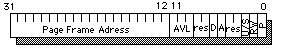

The i386 has a 4GB (32 bit) address space, consisting of 1,024,576 (1MB) possible 4k pages.
The i386 uses a multi-level page table scheme with two levels. The Page Directory (or topmost Page Table) is pointed to by the CR3 register. The Page Directory and all Page Tables must be page-aligned and use up an entire page; they have 1024 entries of 32-bits (4 bytes) apiece.
Each of the 1024 entries in the Page Directory points to a Page Table, which maps a linear 4MB (1024 pages) of the address space.
A page table entry is 32-bits wide and looks like this:
For the page to be user-accessible, the U/S bit must be 1 for both the page and the page table itself.
Since the page directory has the same format as a page table, it can be mapped into itself. This very conveniently makes the entire page table appear to be 4MB of continous linear memory. The page entry for any logical address can then be accessed with:
unsigned int *getPageEntry(unsigned int address)
{
unsigned int *pageTable = (unsigned int *) 0xffc00000;
/* 0xffc00000 is the valid address if the page directory was mapped
into the last entry of itself
*/
return &pageTable[address >> 12];
}
On the i386, exception 14 is used for page faults and other virtual
memory exceptions. The associated error code will tell you the exact
cause of the exception:
The CR2 register always holds the exact location of the last page fault, and can be read using the following C function:
unsigned int getCR2(void) {
unsigned int _cr2;
asm ("mov %%cr2, %0":"=r" (_cr2):);
return _cr2;
}
Control Register 3 (CR3) is often referred to as the Page Directory Base Register (PDBR). This 32-bit register contains the physical address of a page, which should be a Page Directory (if paging is turned on, and CR3 is set to an invalid or uninitialized page directory, the machine will most likely suffer an unrecoverable fault, since all memory references have just been yanked out from under it).
Routines for setting and reading the current value of CR3 follow:void setCR3(unsigned int pagedir)
{
asm ("mov %0, %%cr3": :"r" (pagedir));
}
unsigned int getCR3(void)
{
unsigned int _cr3;
asm ("mov %%cr3, %0":"=r" (_cr3));
return _cr3;
}